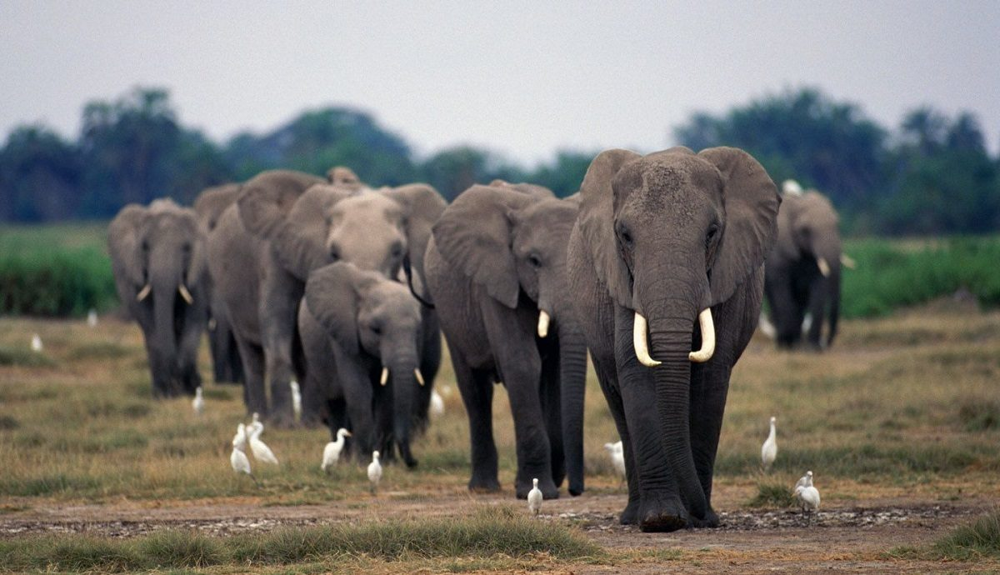

Elefante Asiático
Los elefantes asiáticos o Elephas maximus pueden verse en todo el mundo desde
hace muchos años, de hecho hace siglos que han viajado como parte de imperios
y de circos. Son muy buscados para los trabajos de campo que requieren gran esfuerzo
y para los espectáculos porque son animales grandes que pueden soportar gran cantidad de peso
y esfuerzo pero, a la vez, son más pequeños que sus familiares los elefantes africanos.
Así, los elefantes asiáticos en libertad están en peligro de extinción porque se los humanos
los explotamos para nuestro beneficio, ya sea para trabajos en la agricultura,
en la construcción, en el circo o en el turismo, y porque su hábitat se destruye
cada vez más rápido. Además, los elefantes de Asia son capturados, tanto vivos como muertos,
mayormente de forma ilegal para zoos particulares y la venta de partes.